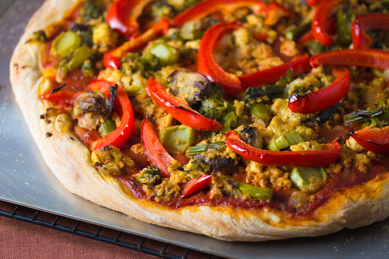

Pizza

Easy Vegan Pizza Crust
von Veganbaking.net, CC BY-SA 2.0
Description
This is an easy and fast recipe for a yummy vegan pizza with an incredible crust.
And that is without using any vegan "alternative products".
Ingredients
- flower
- water
- yeast
- salt
- tomato sauce (see other recipes)
- bell Pepper
- broccoli
Steps
- Make dough with water, flower, yeast and salt
- Let the dough rest for two hours
- Flatten the dough to a shape and thickness you like
- Put on as much sauce as you want
- Put on the rest of the ingredients
- Put the whole thing in the oven for about 15 minutes at your ovens maximum temp (at least 240 °C)
More recipes